The pulses are the same on all three pages: they climb a random bar in one of the four network colours, about twice as often as before, and the bar wiggles behind each pulse, never more than 6 pixels, differently every time. The sweep is gone. The three pages differ only in what replaces it. Open the live pages: stills catch one moment only.
One soft light wanders slowly behind the bars on an irregular path. Bars near it catch its colour, strongest at its height. The colour changes through the four network colours.
Open the live page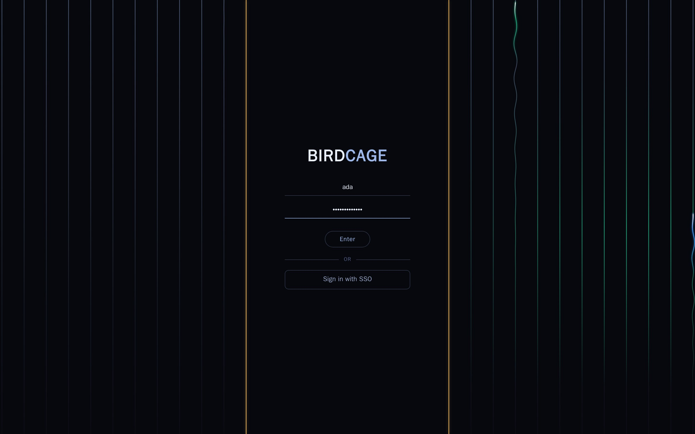
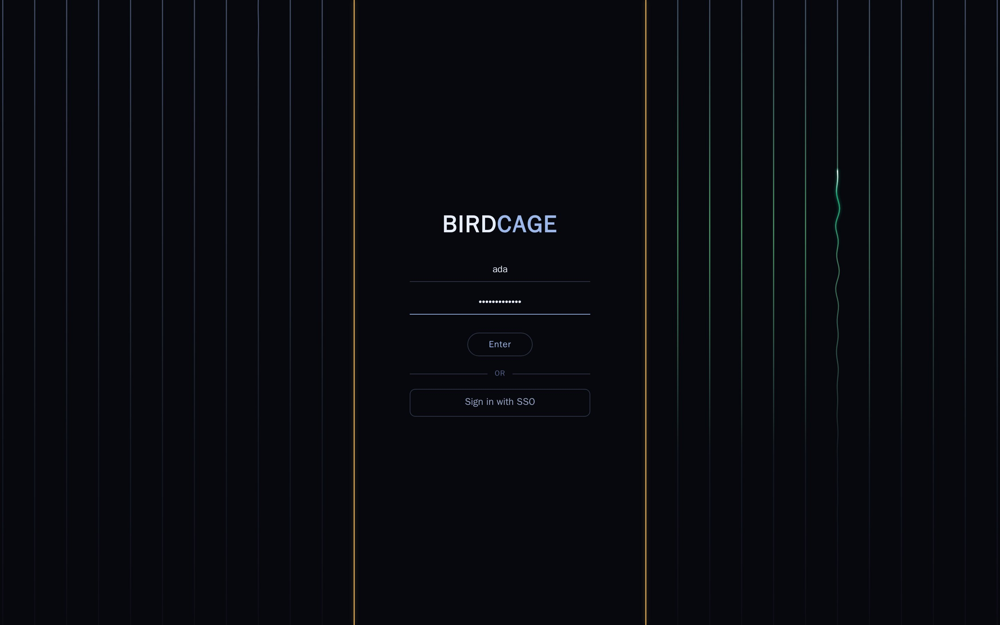
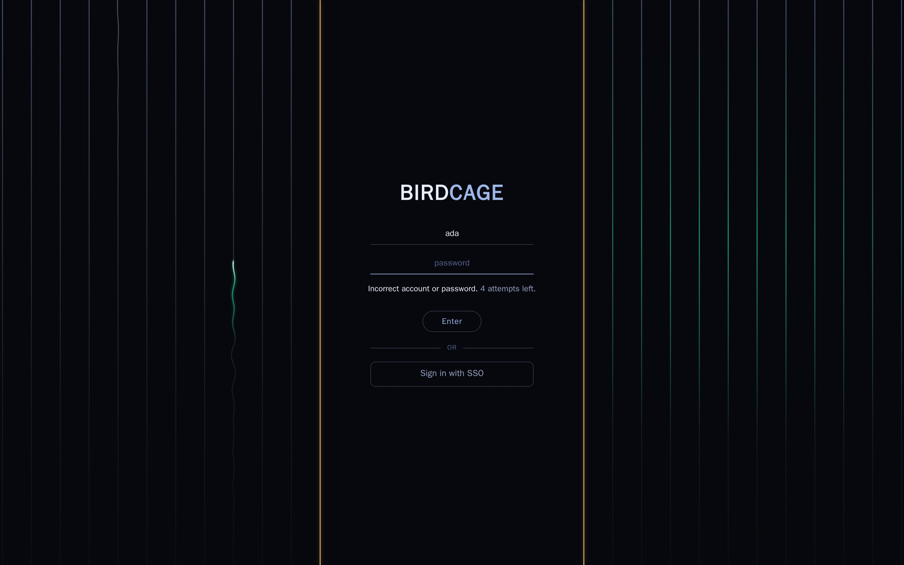
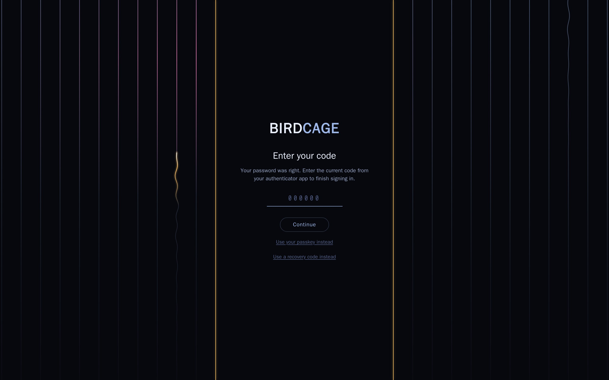
No separate light. Each pulse sets off its neighbours: the bars either side light in the pulse's colour, one after another, fading with distance.
Open the live page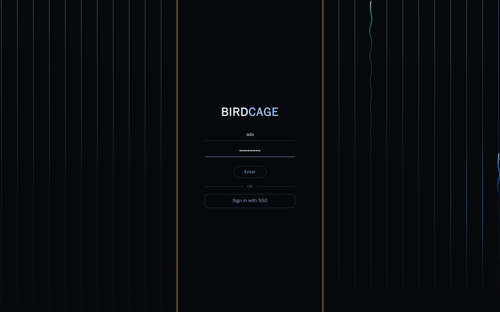
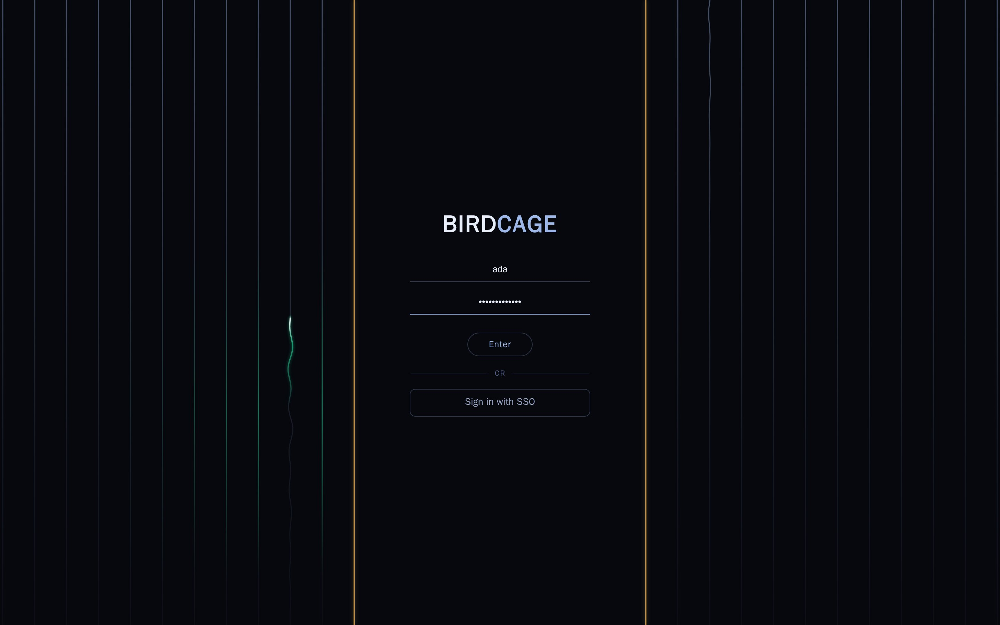
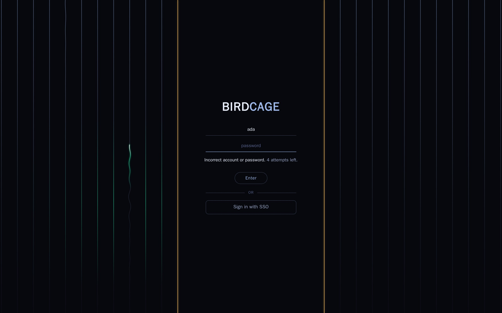
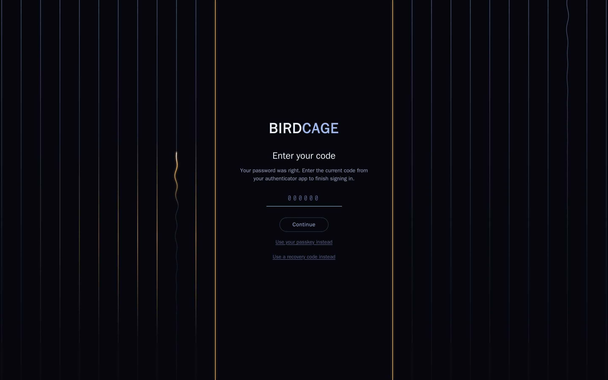
Every bar carries its own faint patch of colour that drifts up and down at its own pace.
Open the live page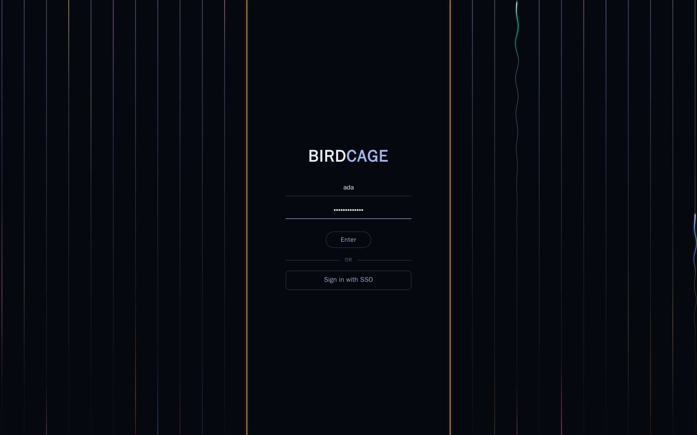
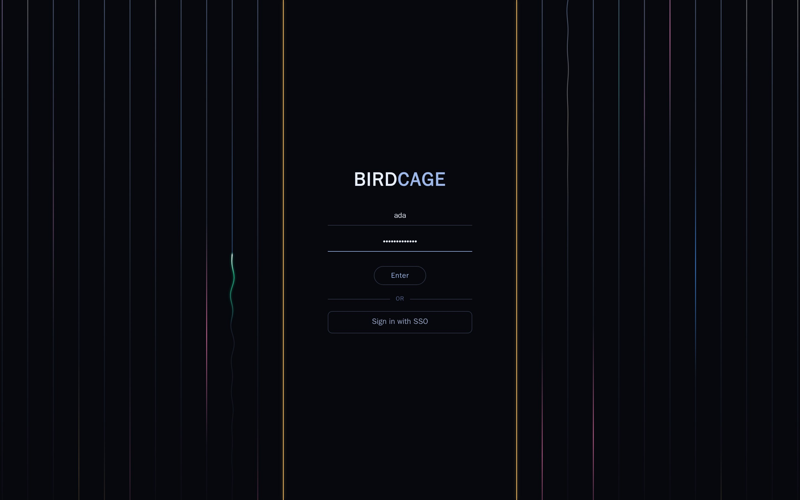
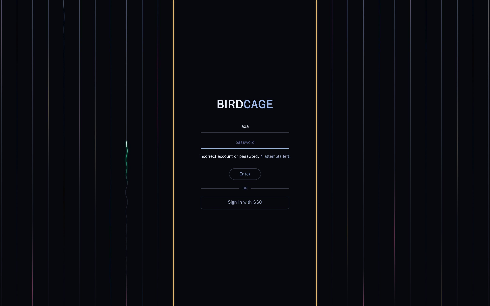
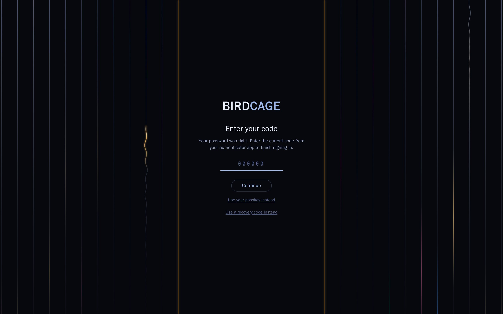